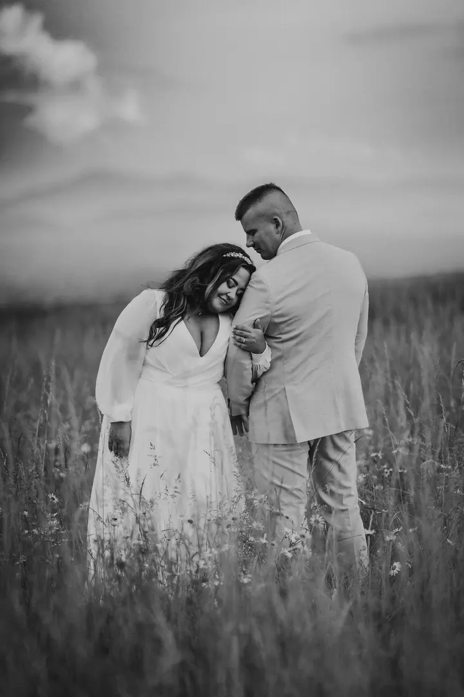
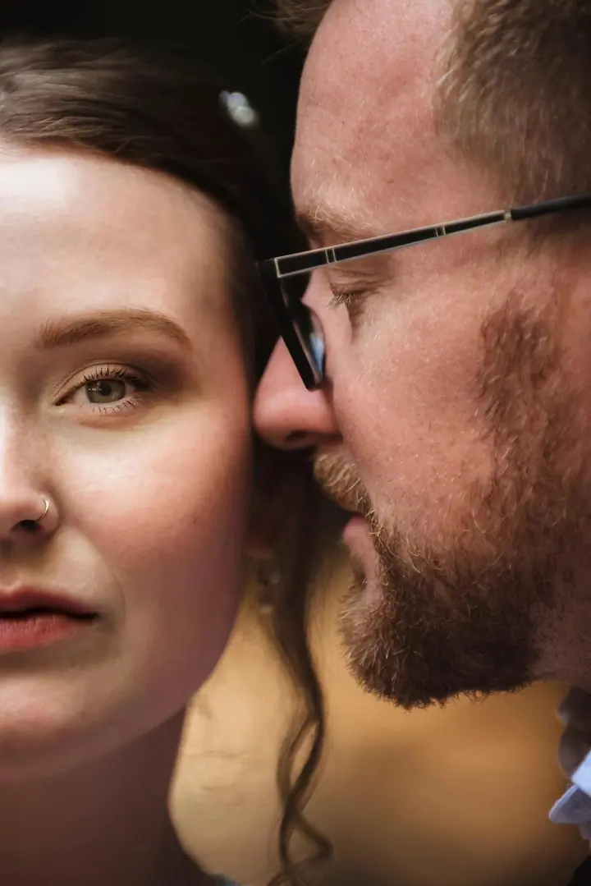
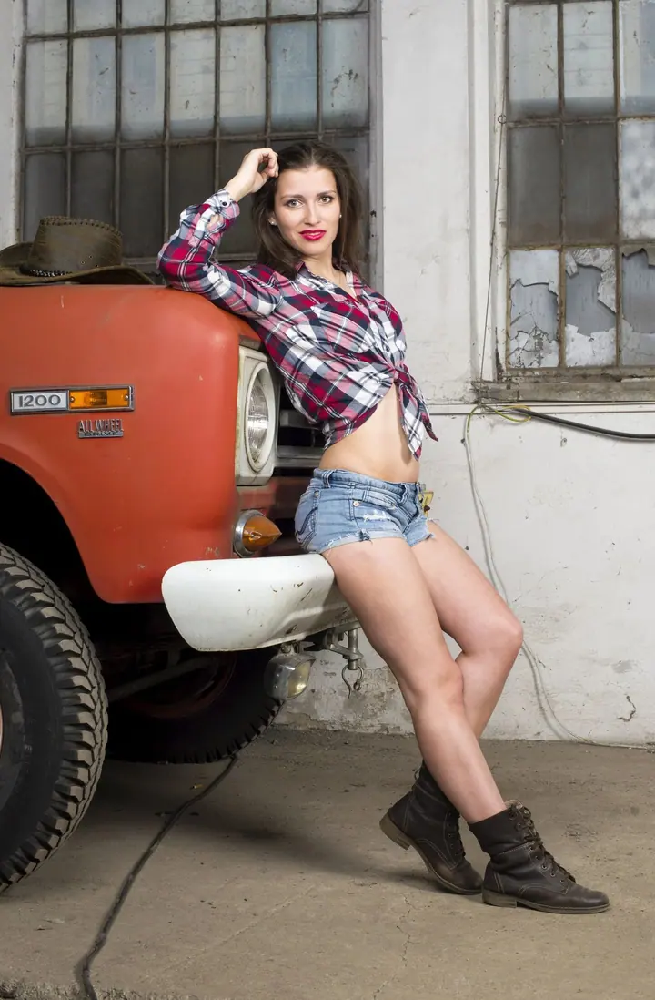

Svatební focení
Fotím emoce, slzy štěstí i drobné detaily vašeho dne. Nejčastěji mě potkáte na svatbách v Beskydech a v Ostravě, ale za vaší láskou ráda dojedu kamkoliv.

Jmenuji se Eva Mencnerová a fotím svatby, těhotenství a první dny s miminkem i rodiny s dětmi v Ostravě a v Beskydech. Mám ráda přirozené fotky bez strojených póz a stre…
Rezervovat termínK fotografii mě přivedla maminka. Obdivovala jsem, jak si v černé komoře sama vyvolává fotky, a připadalo mi to čarovné. Profesně jsem se focení začala věnovat až později, když jsem si v kanceláři projektové a finanční manažerky prošla vyhořením.


Vždycky jsem milovala cestování. S mužem jsme jednou vyrazili na starých kolech z Bohumína k Černému moři, do Gruzie a Arménie a ujeli přes 4 tisíce kilometrů. Domů jsme si přivezli ten nejcennější suvenýr, našeho prvorozeného syna. Jak na kole, tak i v práci umím šlápnout do pedálu.
Dnes jsem máma dvou malých dětí a s nimi se učím trpělivosti i tomu, jak zachytit první úsměvy a krůčky. Fotím ve svém útulném ateliéru ve Frýdlantu nad Ostravicí, venku v přírodě nebo u vás doma. Jako certifikovaná newborn fotografka mám na prvním místě bezpečí a pohodu vašeho miminka.
Co fotím
Fotím emoce, slzy štěstí i drobné detaily vašeho dne. Nejčastěji mě potkáte na svatbách v Beskydech a v Ostravě, ale za vaší láskou ráda dojedu kamkoliv.
Jemné a přirozené fotky v boho ateliéru ve Frýdlantu, v přírodě Beskyd nebo u vás doma. Těhotenské šaty vám ráda zapůjčím zdarma.
Fotím v klidu, bez spěchu a s ohledem na bezpečí vašeho miminka, v ateliéru nebo u vás doma. Šaty a rekvizity jsou v ceně.
Nejde o pózování, jde o radost, smích a upřímné emoce. Fotíme v ateliéru ve Frýdlantu, v podhůří Beskyd nebo v industriálním prostředí Ostravy.
Postup
Zavoláme si nebo si napíšeme a probereme vaše představy. Poradím vám s oblečením i místem a těhotenské šaty vám ráda zapůjčím zdarma.
Fotíme v klidu v ateliéru ve Frýdlantu nad Ostravicí, v přírodě nebo u vás doma. Pózovat umět nemusíte, celým focením vás jemně provedu.
Po focení vám pošlu náhledy a z nich si v pohodlí domova vyberete ty, které se vám líbí nejvíc.
Vybrané fotky pečlivě upravím tak, aby zůstaly přirozené a nadčasové. Další snímky nad rámec balíčku si můžete kdykoliv dokoupit.
Otázky
Ideálně do 14 dnů po narození, kdy miminko ještě většinu času spí a dá se krásně polohovat. Proto je dobré ozvat se mi už v těhotenství.
Nemusíte. Mám kolekci těhotenských šatů, které vám zapůjčím zdarma. Když budete chtít, zajistím vám i spolupráci s vizážistkou.
Prvních 20–50 vybraných fotografií vám pošlu do týdne, ať máte ochutnávku co nejdřív. Zbytek dostanete po pečlivém zpracování.
Portréty, rodinné a párové focení začínají na 1 800 Kč, svatby na 4 000 Kč. Přesnou cenu vám ráda spočítám podle toho, co si vyberete.